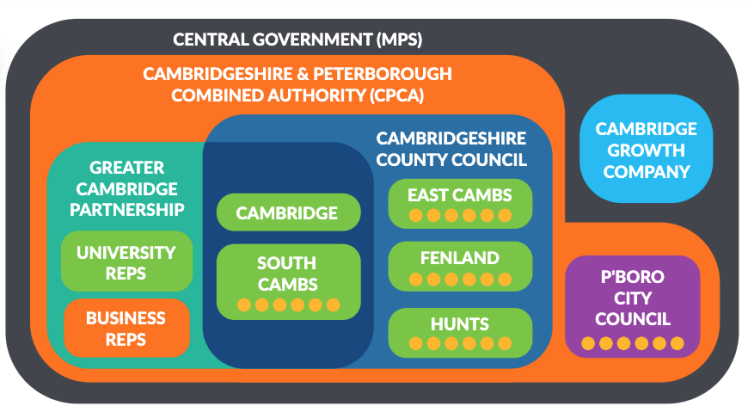

Understanding the different layers of local government can be confusing. This page explains the roles of the different councils that serve Cambridge.
For most people in Cambridgeshire, there are two main layers of local government. These are the County Council and the District Council.
If you live within the Cambridge city boundary, your district council is the Cambridge City Council. If you live outside the boundary your district council is South Cambridgeshire District Council (this includes some of the outer edges of what you might think of as Cambridge, such as Girton, Fen Ditton or the edge of Cherry Hinton). You can check the city boundary on the city council website
Examples: Cambridge City, East Cambridgeshire, Fenland, Huntingdonshire, South Cambridgeshire
This is often the most local layer of government, unless you have a town or parish council.
| Responsibilities include |
|
| Who makes the decisions? | Elected councillors. They are usually elected for a 4 year term. |
| How can I get in touch? | For day to day queries, the council website (linked above) is your best route. Otherwise, WriteToThem is the best way of finding and contacting your county and district councillors (and your MP) |
The County Council covers the whole of Cambridgeshire and provides services that are best delivered over a larger area. As the highways authority for the whole of Cambridgeshire, it is responsible for all roads in the county, including within Cambridge City.
| Responsibilities include |
|
| Who makes the decisions? | Elected county councillors. They are usually elected for a 4 year term. |
| How can I get in touch? | For day to day queries, the county council website is your best route. Otherwise, WriteToThem is the best way of finding and contacting your county and district councillors (and your MP). |
This is a newer layer of government, led by a directly elected Mayor (currently the Conservative Paul Bristow), covering both Cambridgeshire and Peterborough. It sits above all of the other local councils and has representatives from each.
| Responsibilities include |
Large-scale strategic projects, including:
It receives most of the region's transport funding (apart from that held by the GCP) and lobbies for more investment. It will soon oversee most of the local bus network, following the recent decision to bring the region's buses under public control. |
| Who makes the decisions? | The Combined Authority Board which includes the Mayor, one member from each of the 7 other councils, and a representative from the Business Board. Most decisions need a 2/3 majority and the Mayor has a veto. |
| How can I get in touch? | The CPCA website. However, you may have more traction through your elected representatives. |
In 2014, Cambridge and South Cambridgeshire signed a "city deal" which granted up to £500m in funding between 2015 and 2030 (subject to gateway reviews every 4-5 years). The Greater Cambridge Partnership was set up to use this funding to support growth in Cambridge and the surrounding area through infrastructure, housing and skills investment.
| Example projects |
|
| Who makes the decisions? | One representative each from Cambridge City Council, South Cambs District Council and Cambridgeshire County Council. They seek consensus but vote by majority otherwise. |
| How can I get in touch? | The GCP website. However, you may have more traction through your elected representatives. |
Some areas, particularly on the edges of Cambridge and in surrounding villages, also have a Town or Parish Council. These are the most local level of government and generally have more limited powers.
| Responsibilities include |
Parish councils may also respond to planning applications and draw up neighbourhood plans to influence the decisions made by other authorities on things like housing and transport. |
| Who makes the decisions? | Elected parish councillors. They are usually elected for a 4 year term, and are usually independent of political affiliations. |
| How can I get in touch? |
The Cambridge Growth Company was established by the government in 2024 and its stated aim is to "unlock and accelerate development and deliver the homes, jobs and infrastructure needed for long-term, sustainable growth." It was recently announced that government would be supplying funding of £400m to support this objective, although there are not yet hard details on how this will all be put together and work. It may be that it will operate quite similarly to the GCP in practice.
| Who makes the decisions? | As of late 2025, it's unclear how this will work. The government have appointed Peter Freeman as Chair of the CGC. He was previously involved with regeneration work around King's Cross Station. |
| How can I get in touch? | The CGC website |
Don't worry if not, because it's all changing soon. The current government are planning to replace all two-tier councils in England with "unitary" authorities. For Cambridgeshire, that means the current county and district councils will be replaced with a single layer. Cambridgeshire is likely to end up with two of these unitary authorities (Peterborough already has one). Where the boundaries will be or when that will happen is not yet decided, but the government is aiming for the change to be in place by 2027-28.